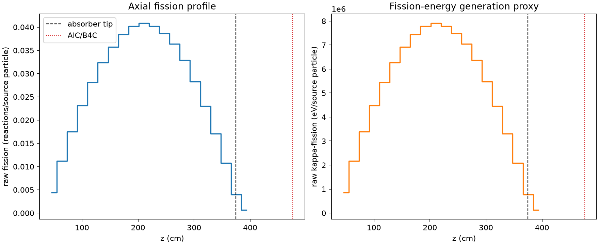
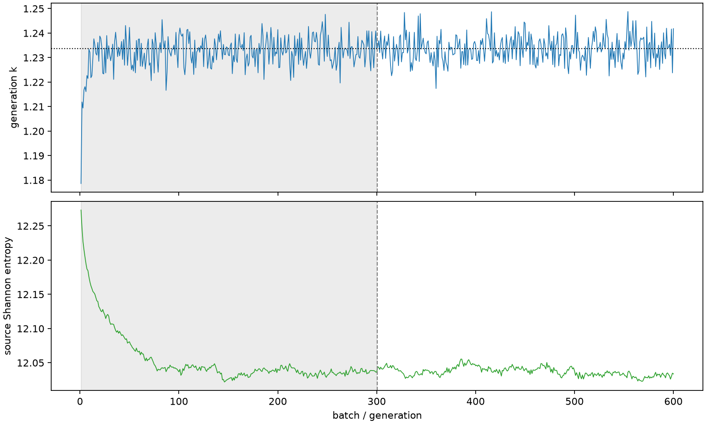

| field | value |
|---|---|
| experiment | V2-STAGE_256_OGRENCI_01-0007 |
| k | 1.2336568707103854 |
| MC standard error | 0.00018932311866819048 |
| seconds | 971.8964043180167 |
| acceptance | not_assessed |
| convergence | review_required |
Completed is output integrity only; physical and statistical review required. Zero tallies do not prove zero production or zero uncertainty.
| diagnostic | value |
|---|---|
| geometric fuel voxels | 5280 |
| zero fission tally voxels | 0 |
| low signal fuel voxels | 0 |
| low signal fission share | 0.0 |
| low signal kappa share | 0.0 |
| important fission share | 0.9500654935681334 |
| previous filter included | 5280 |
| duration estimate s | 1562.5173488400023 |
| actual minus estimate s | -590.6209445219856 |
| fission relative MC error | statistics |
|---|---|
| all_geometric_fuel | {"voxels": 5280, "positive_mean_voxels": 5280, "zero_mean_voxels": 0, "undefined_relative_error_voxels": 0, "median": 0.010693490888909998, "p95": 0.03474316336385665, "maximum": 0.08187045704403044} |
| low_signal | {"voxels": 0, "positive_mean_voxels": 0, "zero_mean_voxels": 0, "undefined_relative_error_voxels": 0, "median": null, "p95": null, "maximum": null} |
| important_95pct | {"voxels": 4095, "positive_mean_voxels": 4095, "zero_mean_voxels": 0, "undefined_relative_error_voxels": 0, "median": 0.009876710707430538, "p95": 0.014540749876129461, "maximum": 0.017965652795237153} |
| outside_previous_filter | {"voxels": 0, "positive_mean_voxels": 0, "zero_mean_voxels": 0, "undefined_relative_error_voxels": 0, "median": null, "p95": null, "maximum": null} |
| kappa_fission relative MC error | statistics |
|---|---|
| all_geometric_fuel | {"voxels": 5280, "positive_mean_voxels": 5280, "zero_mean_voxels": 0, "undefined_relative_error_voxels": 0, "median": 0.010681912530804253, "p95": 0.03470529401189926, "maximum": 0.08174373515045782} |
| low_signal | {"voxels": 0, "positive_mean_voxels": 0, "zero_mean_voxels": 0, "undefined_relative_error_voxels": 0, "median": null, "p95": null, "maximum": null} |
| important_95pct | {"voxels": 4095, "positive_mean_voxels": 4095, "zero_mean_voxels": 0, "undefined_relative_error_voxels": 0, "median": 0.009865376755935126, "p95": 0.01452584671748915, "maximum": 0.017947522081726834} |
| outside_previous_filter | {"voxels": 0, "positive_mean_voxels": 0, "zero_mean_voxels": 0, "undefined_relative_error_voxels": 0, "median": null, "p95": null, "maximum": null} |
| axial bin | fission share | kappa-fission share |
|---|---|---|
| 1 | 0.008767891007654802 | 0.008768254196968625 |
| 2 | 0.02218387280228966 | 0.022183819523645495 |
| 3 | 0.034710375217154255 | 0.034710327717487416 |
| 4 | 0.045952543280107346 | 0.045952457865853266 |
| 5 | 0.05577526808836635 | 0.05577519079973789 |
| 6 | 0.06424526380372685 | 0.06424507875074144 |
| 7 | 0.07096503521528653 | 0.07096480276458367 |
| 8 | 0.07626509895596666 | 0.07626491060810955 |
| 9 | 0.07981610387810041 | 0.07981606303838258 |
| 10 | 0.08103959316596018 | 0.08103934535308846 |
| 11 | 0.07975728636180013 | 0.07975721778142368 |
| 12 | 0.07677730320309624 | 0.07677713651683318 |
| 13 | 0.07219539495970251 | 0.07219529037693097 |
| 14 | 0.06521558392447706 | 0.06521557689128882 |
| 15 | 0.056061656777475086 | 0.05606152551586136 |
| 16 | 0.045688121169316254 | 0.04568806841423181 |
| 17 | 0.033907355813683045 | 0.03390735309425613 |
| 18 | 0.021419137219597185 | 0.021419122591714468 |
| 19 | 0.00791712069325116 | 0.007917945828322216 |
| 20 | 0.0013399944629884108 | 0.0013405123705389082 |
Histories include the inactive-to-active transition at batch 300. kappa-fission approximates fission energy production, not total heat deposition.

